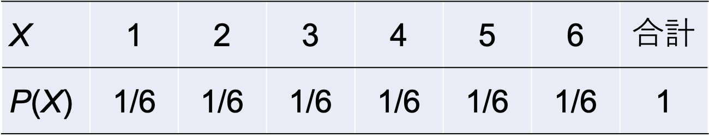
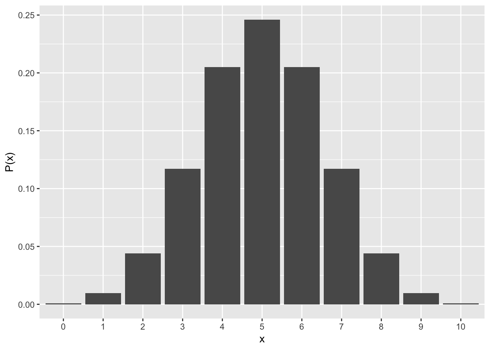
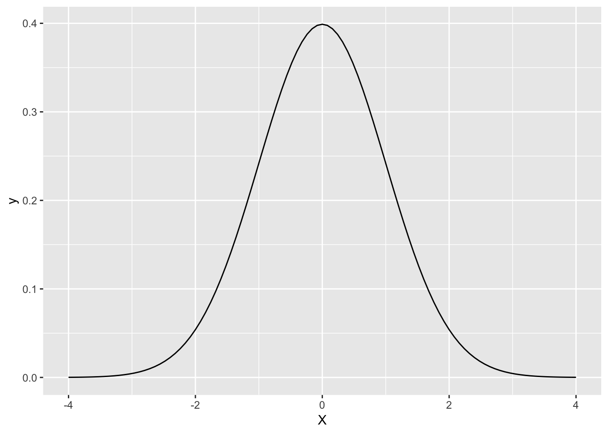
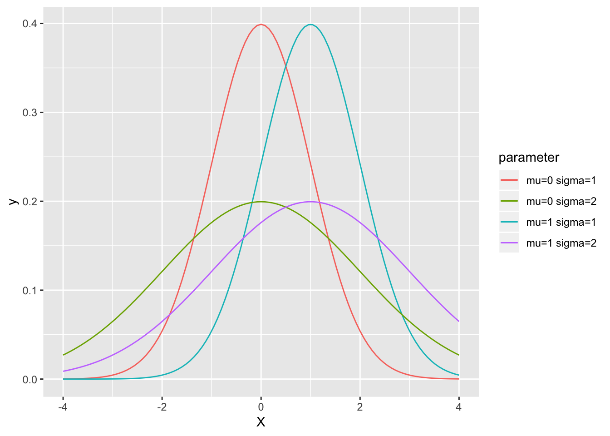
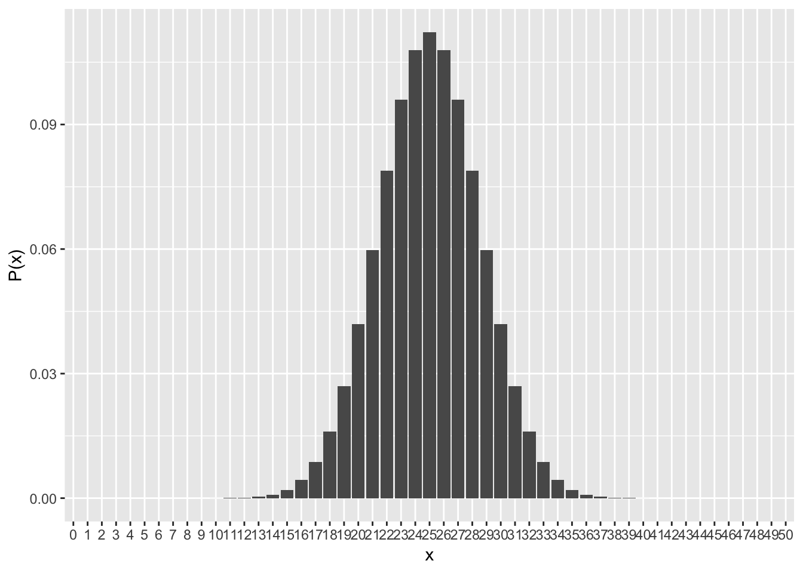
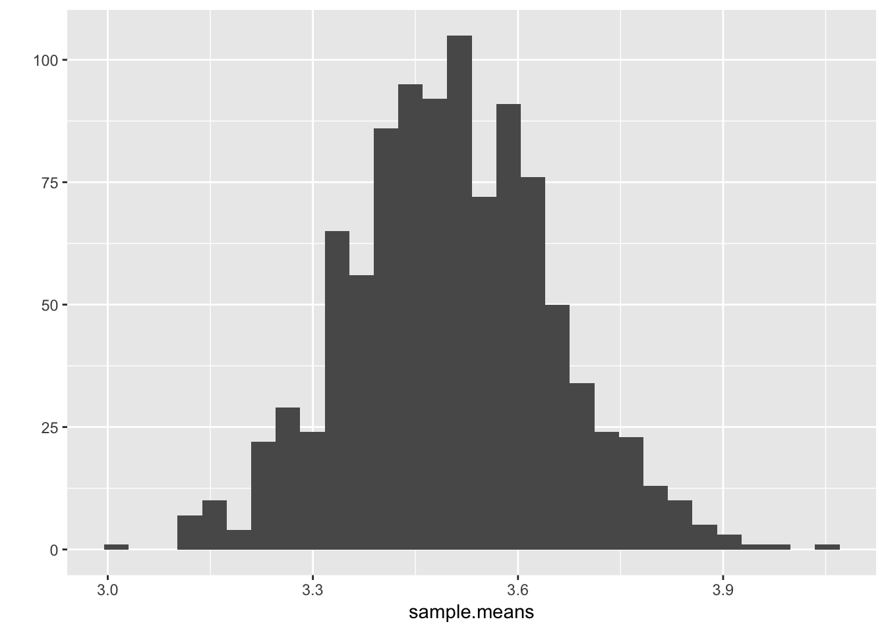
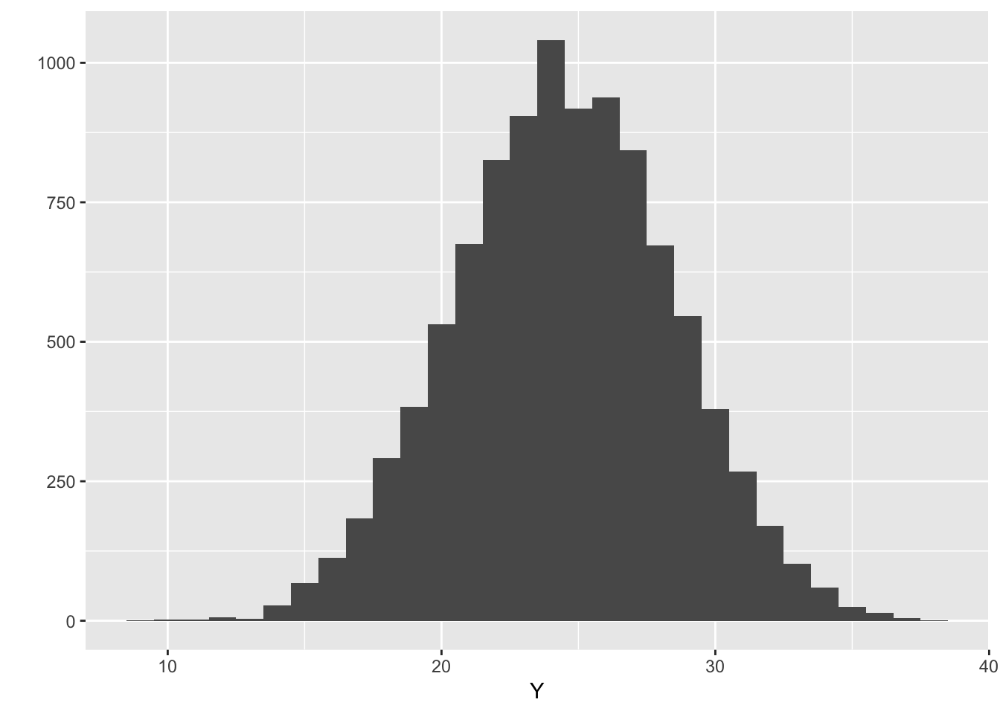
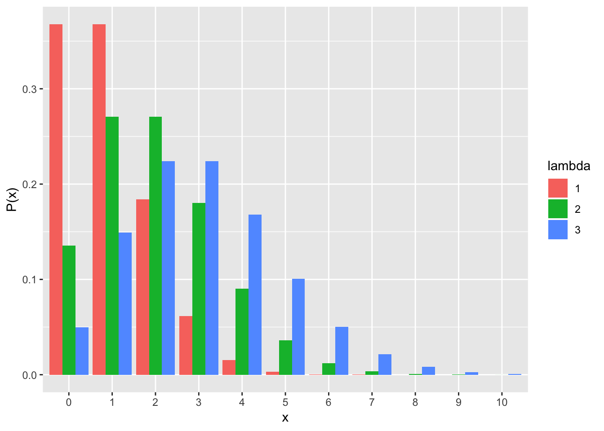

Chapter 4 確率分布
- 確率分布とは何かについて学ぶ。
- 確率変数と確率分布
- 二項分布
- 正規分布
- その他の確率分布
今回の演習でも，tidyverseパッケージを使うので，予めロードしておく。また，set.seed(1234)というプログラムを実行しておく。
- set.seed()はいわゆる「乱数の種」というものを設定するための関数。乱数の種を同じ値に設定しておくと，乱数を再現することが出来る（このテキストに書いてあるのと同じ結果が再現できる）。
install.packages("tidyverse")
library(tidyverse)
set.seed(1234)4.1 確率変数と確率分布
サイコロを1個投げるとする。それぞれの目が出る確率は1/6である。それぞれの目をX（1, 2, 3, 4, 5, 6），それぞれの目が出る確率をP(X)とする。
XとP(X)を以下の表1で示す。
表1

このとき，Xを確率変数と呼ぶ。その値と対応する確率が存在する変数のことをいう。表1のように，確率変数とその変数が取り得る確率の分布を確率分布という。
確率分布には様々な種類がある。今回は特に，その中でも二項分布と正規分布について扱う。
※なお，上のサイコロの目の例のように，どの確率変数Xについても常に一定値の確率を取る確率分布は一様分布(uniform distribution)と呼ばれる。
4.2 二項分布
4.2.1 二項分布の基本
コインをn回投げる。表が出る確率を\(q\)とすると, 裏が出る確率は\((1-q)\)となる。n回中，表がx回出る確率P(x)は，理論的には以下の式で算出される。
\[ P(x) = {}_n\mathrm{C}_xq^{x}(1-q)^{(n-x)} \]
xを確率変数とした場合，上記の式の確率に従う確率分布を二項分布という。 つまり二項分布は，生じる事象が2つのカテゴリに分けられる場合に当てはまる確率分布である。コインを投げたときに出る面が「表か裏」か，学生の中から選んだ人の性別が「男か女」か，ある意見について「賛成か反対」かなど。このような事象が生じる確率は，理論的には二項分布に従う。
コインを投げる場合の例に戻る。例えば，表が出る確率qを0.5として，10回投げたときに表が6回出る確率を計算してみよう。Rならば，dbinom()関数を使えば簡単に計算できる。
#xは確率変数（コインの例での），sizeは試行回数（コインの例のnに相当），
dbinom(x=6, size=10, prob=0.5)## [1] 0.2050781#上の式n, x, pに実際に値を入れて計算する場合。dbinom()関数を使った場合と結果が一致することを確認しよう。
choose(10, 6) * 0.5^6 * (1 - 0.5) ^4## [1] 0.2050781二項分布は以下のように表現されることもある。
\[ x \sim Binomial(n, q) \]
Binomialのカッコ内のn, qのように，確率分布を構成する変数のことをパラメータと呼ぶ。 Binomialは二項分布，\(\sim\)は「従う」という意味である。つまりこの式は，「xは，nとqをパラメータとする二項分布に従う」ということをいっている。
4.2.2 二項分布の期待値と分散
表が出る回数xが0〜10回の場合全てについて，それぞれが生じる確率を計算すると以下のようになる。
dbinom(x=0:10, size=10, prob=0.5)## [1] 0.0009765625 0.0097656250 0.0439453125 0.1171875000 0.2050781250
## [6] 0.2460937500 0.2050781250 0.1171875000 0.0439453125 0.0097656250
## [11] 0.0009765625グラフにすると以下のようになる。横軸をx, 縦軸をP(x)とする。

グラフからもわかるように，表が出る確率が0.5のコインを10回投げたときに，最も出やすいのは10回中5回であることがわかる。10回中1回，10回中10回出るケースはほとんどまれであることがわかる。
この図からも，確率分布には最も出やすい変数（平均値。確率分布の場合は期待値と呼ぶ）と分散が存在することがわかる。
二項分布の期待値\(E(x)\)と分散\(Var(x)\)は，以下の式から計算できる。
\[ E(x) = nq\\ Var(x) = nq(1-q) \]
表が出る確率が0.5（i.e., q=0.5）のコインを10回(i.e., n=10)投げた場合における，表が出る回数xの期待値と分散を計算してみよう。
#E(x) = nq
10*0.5## [1] 5#Var(x) = nq(1-q)
10*0.5*(1-0.5)## [1] 2.5n=1のときは，ベルヌーイ分布と呼ばれる（例えばコインを1回だけ投げる場合）。
4.3 正規分布
4.3.1 正規分布の基礎
統計学で用いられる確率分布の中でも有名なのは正規分布である。正規分布は，平均\(\mu\)，標準偏差\(\sigma\)をパラメータとする確率分布で，釣鐘型（ベル・カーブ）状の分布を描く。
平均\(\mu\)，標準偏差\(\sigma\)とする正規分布の確率密度関数f(x)は，以下の式から計算される。
\[ f(x) = \frac{1}{\sqrt{2\pi\sigma^2}}\exp\left(-\frac{(x-\mu)^2}{2\sigma^2}\right) \]
この式自体を覚える必要はない。
これは確率分布ではなく，確率密度関数と呼ばれるものである。確率分布は縦軸が横軸の値それぞれが生じる確率を意味しているが，確率密度関数の縦軸は確率そのものを意味しない。確率密度関数の面積が確率を意味する。すなわち，確率密度関数の面積全てを合計した値は，1となる。
または，以下のように表現することもある。
\[ x \sim Normal(\mu, \sigma) \]
平均\(\mu\)を0，標準偏差\(\sigma\)を1とする正規分布について考えてみる。
Rならば，dnorm関数で確率密度関数を出力することができる。
x = seq(-3, 3, 0.05)
y = dnorm(x=x, mean=0, sd=1)
yこれをグラフにすると以下のようになる。

x=0からx=1の範囲が生じる確率は，その範囲に対応するグラフの面積となる。
#Rならば，pnorm関数でxが-∞からqまでの範囲の確率を求めることができる
#以下は，平均0，標準偏差1の正規分布で 0までの確率を求めている。正規分布の半分に相当するので，0.5である。
pnorm(q=0, mean=0, sd=1)## [1] 0.5#特定の範囲を求めたい場合は以下のように使えば良い。例えば以下は，xが1から2の範囲の確率である。
x = pnorm(q=2, mean=0, sd=1) - pnorm(q=1, mean=0, sd=1)
x## [1] 0.1359051以下が平均\(\mu\)と標準偏差\(\sigma\)の値をそれぞれ変えた場合の正規分布である。

- 正規分布は平均\(\mu\)を対象として左右対称のかたちを描く。
- 統計学では様々な変数について，「変数が正規分布に従う」という仮定を置くことが多い。体重や身長なども経験的に正規分布を描く。正規分布は以降でも述べるように確率変数xが連続量の場合の確率分布であるが，離散値のデータについても正規分布を仮定して分析することもよくある（テストの点数，質問紙の回答得点など）。
- しかし，世の中には正規分布に従わない変数もある(例えば年収などは釣鐘型の分布にならない)。データ分析の前に事前に実際のデータの分布を見て，左右対称でないなど明らかに正規分布を仮定できない変数については分析のやりかたを考える必要がある。
平均0, 標準偏差1の正規分布は標準正規分布と呼ばれる。
二項分布\(Binomial(n, p)\)の\(n\)が十分に大きい場合，二項分布は正規分布\(Normal(np, \sqrt{np(1-p)})\)に近似する。例えば，以下にn=50のときの二項分布を示す。
#n=50のとき
plot <- data.frame(x=0:50, p=dbinom(x=0:50, size=50, prob=0.5))
p <- ggplot(data=plot, aes(x=factor(x), y=p)) + geom_bar(stat="identity") + ylab("P(x)") + xlab("x")
p
4.3.2 中心極限定理（＊）
「母集団の確率分布が平均\(\mu\)，標準偏差\(\sigma\)を持つ確率分布に従う\(X\)について，その平均値\(\bar{X_{n}}\)はnが大きくなれば，平均\(\mu\)，標準偏差\(\sigma\)の正規分布に収束する」というのが中心極限定理である。つまり，元の分布がどのような分布でも，そこから平均値を計算することを何回も繰り返すとその分布は正規分布のかたちになるということを意味する。
シミュレーションで確認する。6面のサイコロを100回振る実験を行うとする。
X <- round(runif(100,min=1,max=6),0)
mean(X)## [1] 3.24それぞれの目が出る確率は1/6で一定である。すなわち，サイコロが出る目は一様分布に従う（正規分布ではない）。一様分布の平均値は，最大値をa, 最小値をbとすると，(a+b)/2。すなわち，サイコロの例の場合の平均値は理論的には(1+6)/2=3.5となる。
サイコロを100回振って平均値を求める。この平均値を求めるのを，1,000回繰り返し行う。求めた平均値1,000個の分布を見てみると。。
sample.means <- sapply(c(1:1000), function(x) {mean(round(runif(100,min=1,max=6),0))} )
qplot(sample.means)
正規分布に近似する。1,000回よりももっと回数を増やすと，より正規分布っぽいかたちになる。
このように，元の母集団の分布がたとえ正規分布でなくても，その標本平均は正規分布に近似する。
#サイコロを7回振ってその合計を求める。これを10,000回行ったときの出目の合計値の分布
Y <- round(runif(10000,min=1,max=6),0) +round(runif(10000,min=1,max=6),0) +round(runif(10000,min=1,max=6),0) +round(runif(10000,min=1,max=6),0) +round(runif(10000,min=1,max=6),0) +round(runif(10000,min=1,max=6),0) +round(runif(10000,min=1,max=6),0)
qplot(Y)
中心極限定理が成り立つため，たとえ元の変数が正規分布に従ってなくても，平均化したものを使えば正規分布を前提とした統計的仮説検定を行なっても大きな問題はない。
- 複数の質問項目（順序尺度）をまとめて平均化した心理尺度を分析に使う。
- 選挙への投票（「した」もしくは「しなかった」の二値）者の割合を県ごとに算出して，県を単位として分析に使う。
4.4 その他の確率分布（＊）
二項分布のように，確率変数xが離散変数の場合の確率分布は，離散確率分布という。
正規分布のように，確率変数xが連続変数の場合は，連続確率分布という。
他にも確率分布は以下のようなものがある。
4.4.1 離散確率分布
ポアソン分布
\[ P(x) = \frac{\lambda^x\exp(-\lambda)}{x!}\\ x \sim Poisson(\lambda)\\ \]
- xは0以上の整数（0, 1, 2, 3, …）とする。
- ポアソン分布のパラメータは\(\lambda\)だけである。期待値（平均）は\(\lambda\)，分散は\(\lambda\)である。つまり，平均と分散が等しい分布である。
- 以下に，パラメータ\(\lambda\)をそれぞれ変えた場合のポアソン分布を示す。

一定の期間中にランダムで生じる事象はポアソン分布に従う。具体的な例としては，1日の間に届くメールの件数，営業時間中に来る客の数など。
二項分布\(Binomial(n, p)\)の\(n\)が十分大きく，かつ\(p\)が小さい場合は平均を\(np\)とするポアソン分布に近似する。つまり，めったに起こらない事象はポアソン分布に従う。例えば，1年間の間に生じる交通事故の件数など（365日それぞれで0.1%で生じるとした場合）。歴史的に有名な例は，「ドイツ軍で1年間で馬に蹴られて死亡した兵士の数」がポアソン分布に従うというもの。
4.4.2 連続確率分布
t分布
\[ P(x) = \frac{\Gamma((v+1)/2)}{\Gamma(v/2)\sqrt{\pi v}\sigma}\left(1+\frac{1}{v}\left(\frac{x-\mu}{\sigma}\right)^2\right)^{-(v+1)/2}\\ x \sim Student\_t(v, \mu, \sigma)\\ \]
- パラメータは3つ。vは自由度と呼ばれる。
- 自由度の小さいt分布は分布の裾が長くなる。すなわち，外れ値を含んだ分布となる。
- 自由度\(\infty\)のt分布は正規分布と一致する。
連続確率分布には他にも対数正規分布，指数分布などがあるが，とりあえずは正規分布を知っておけば良い。
練習問題
問１
- あなたは野球部の監督で，自分のチームの勝率はこれまでの練習の経験から32%だとわかっている。
これから遠征で，全部で10試合を行う予定である。
- 勝つ試合の回数を確率変数nとし，nとそれぞれのnに対応する確率を表で示せ。
平均して何試合勝つことができるかを述べよ。
問２
ある学校で小学6年生の身長を測ったところ，平均は150.2 cmで標準偏差が3.5 cmであった。
- 身長152 cmから155 cmの児童の割合はいくらか。
- 身長158 cmを超える児童は何割いるか。
- ヒント：pnorm関数を使おう。なお，全ての範囲の確率の合計は1である。